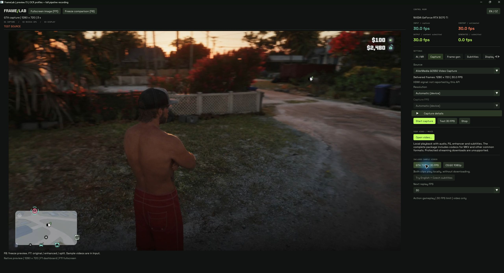

FrameLab preview.15 — start here

Download and launch
- Download the full Windows x64 ZIP and extract all to a short writable folder, for example D:/FrameLab.
- Run Start FrameLab.cmd. A new installation opens the GTA demo; subsequent launches restore the saved session. No compiler, Python, SDK or system VLC installation is needed. Keep the entire folder together.
- Begin with Frame gen → 2×. F11 opens fullscreen; Escape/F11 returns. EN / CZ changes language; English is the clean-install default.
VFG targets RTX 40/50. Start FrameLab - Optical Flow.cmd selects a separate fallback; support/performance depends on the actual card. VFG runtime, neural OCR, CPU translation, codecs and export tools are bundled. GPU translation models download inside the app. Optional NR uses an external import. Antivirus may delay first launch; inspect errors and keep protection enabled.
Capture card
In Capture, choose the source, Resolution and Capture FPS separately, then Start capture. Automatic leaves the choice to the driver. 4K and other aspect ratios depend on listed hardware modes.
Delivered frames shows received dimensions and callback rate. The API does not report HDMI input timing. A 60 FPS capture can repeat 30 FPS game images. Remove repeated input frames helps; estimated content FPS is not an engine counter.
No image: check the correct card, cable, permitted source content and status. Close other programs holding the card. Test 30 FPS is a synthetic source, not the console.
Your own video or movie
Use Capture → Open video…, then Play/Pause, seek, speed and loop. Bundled LibVLC 3.0.24 supports MP4/MKV. After tracks load, choose audio and subtitle tracks or turn embedded subtitles off. Media details.
Embedded subtitles enter the image before FG/NR. OCR translates visible text; it does not directly translate text tracks or transcribe speech. Protected streaming downloads are unsupported. Decoding and copies can add CPU load.
Frame generation and enhancement
Start with 2× / Medium. Inspect edges, HUD and fast motion: 3×/4× can produce severe artifacts. The multiplier does not guarantee corresponding physical display FPS.
For AI / NR, follow the exact import guide. Start at 720p, one pass. Lower the processing limit/passes or disable motion estimation if FPS drops. Lower strength only changes the blend, not inference cost. F6 toggles NR; F7 changes comparison; F8 freezes a pair. NR Original can already contain FG. Order: input → FG → NR → Czech overlay → display.
Czech subtitles and saved profiles
Open Subtitles, choose bundled RapidOCR, OPUS-MT / CPU, then enable translation. RapidOCR needs no Windows OCR language download. The artificial EN → Czech sample under Capture helps check setup.
While English text is visible, click Select subtitle word + reading area…. The preview freezes. Mark one word, then the complete area where multiple subtitle lines can appear, and confirm. It learns color and approximate letter height, not the word itself. Leave room for extra lines and exclude HUD/license plates where possible.
Name and save a profile. Appearance, region and selected profile persist; load a different profile for another game. Style matching reduces unrelated text, but cannot guarantee perfect detection.
Select optional CUNI Q3/Q5/Q8, then Download / resume and verify. The app downloads the pinned model and portable runtime, verifies hashes and displays progress. Q5 is used in the published GTA captions. Higher precision is not a guarantee of better translation. Sizes and subtitle timing.
Czech lines are centered; drag their position independently from OCR. Multiline text is clamped inside the visible image. Minimum on screen and Keep while waiting keep delayed text readable while OCR continues. Fast dialogue and translation mistakes remain possible.
Display and audio
Display chooses monitor and Fit/Fill/1:1. Fit preserves the whole picture with bars; Fill and oversized 1:1 can crop. F11 hides controls/comparisons/OCR outlines, while retaining the Czech overlay.
Audio selects output, volume and mute. Capture and local-file audio have their respective controls. Analysis clips have no audio. Submitted/DXGI FPS does not measure physical panel scanout or controller-to-photon latency.
Recording
Choose a destination in Recording, then Record 15 s analysis. The folder is remembered. For 1440p with all effects, allow at least 36 GiB free as a practical recommendation; actual use varies.
Frames are losslessly compressed into bounded RAM, then saved and exported. Wait for completion before another take. Insufficient RAM/disk or GPU readback can stop early; partial takes are labeled and the complete prefix is exported.
Exports include RAW/generated indexed clips, synchronized before/after/final, triple comparison, subtitles.cs.srt, text JSON, timing and settings/IDs. Final includes actual caption delay. No desktop/audio is captured. Format and limits.
Debug and measurement
Find Debug & measurement with the settings-tab arrows. Read the storage warning and start logging; F9 toggles it. Logging continues until stopped: timestamps, CPU/GPU, FPS, queues, OCR/translation text and settings. Review logs before sharing private text.
New fields include foreground/fullscreen state, window size, presentation waiting and loop stalls. Measurement meanings.
Updating
Close the app and back up your folder/settings. Extract the new ZIP separately. Transfer personal settings/profiles and optional verified models/runtime as needed; do not replace new workers or executable with old ones. Public packages contain no owner logs, recordings or personal settings.